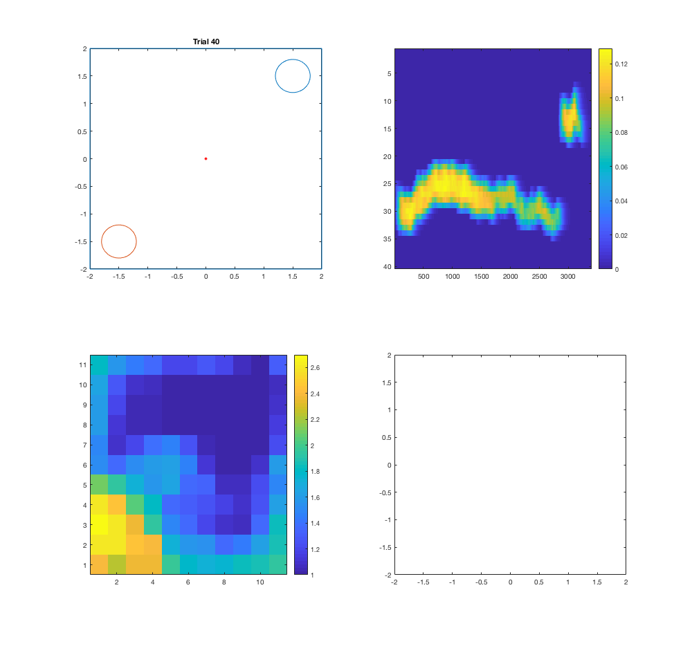

This is the readme for the models associated with the paper: Brzosko Z, Zannone S, Schultz W, Clopath C, Paulsen O (2017) Sequential neuromodulation of Hebbian plasticity offers mechanism for effective reward-based navigation. Elife To run type seq_neuromod_plasticity on the matlab command prompt. After a minute or so it should produce the following images (the panels displays snapshots of updates while the simulation is running): 